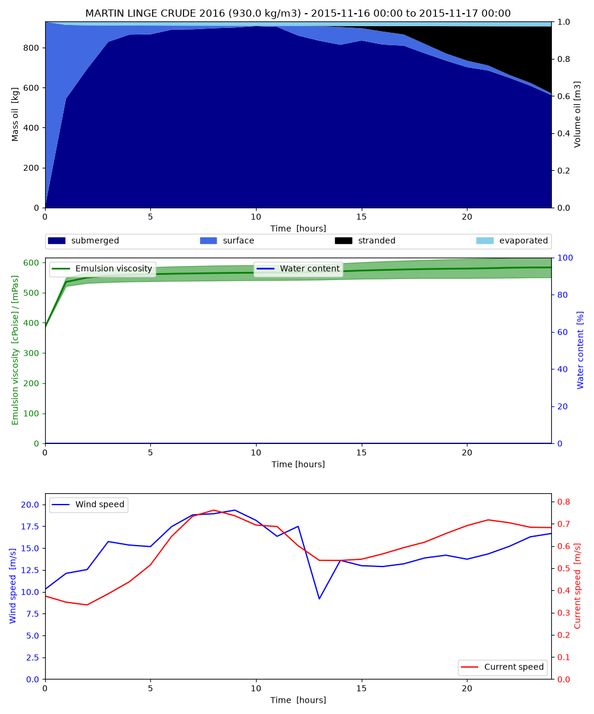
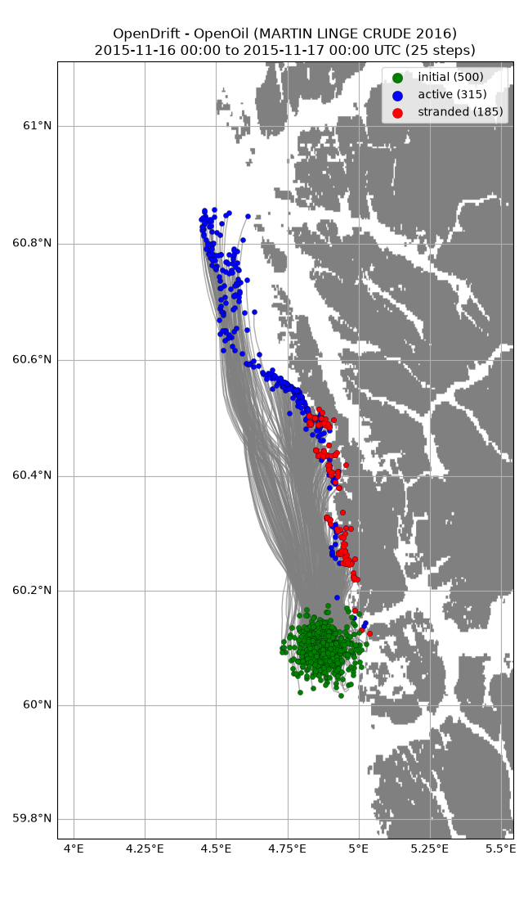
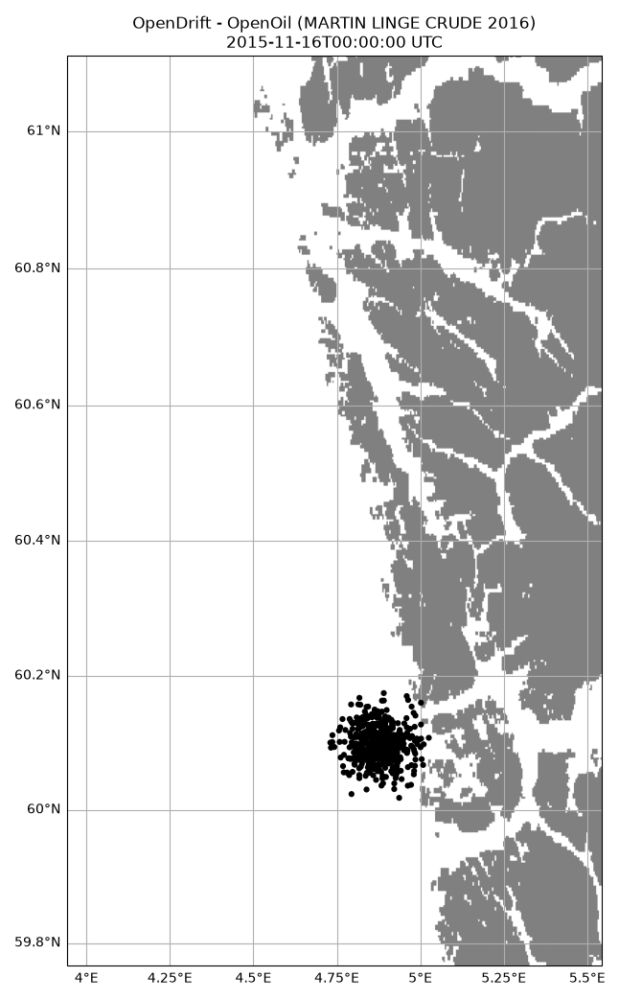
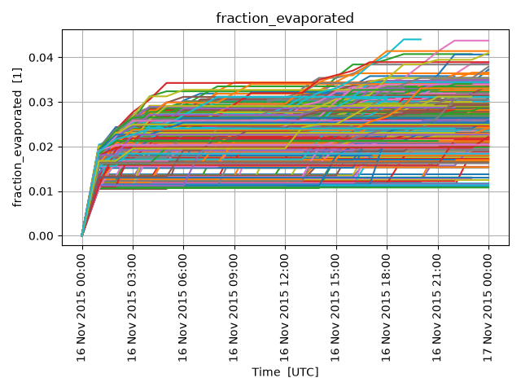
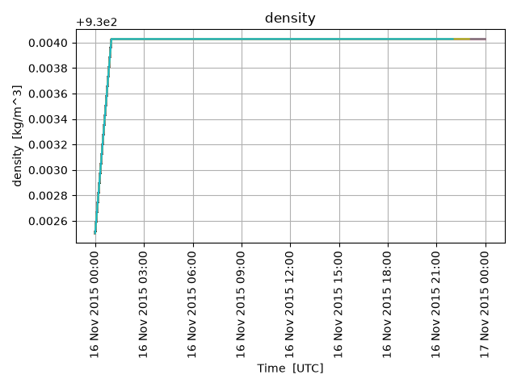
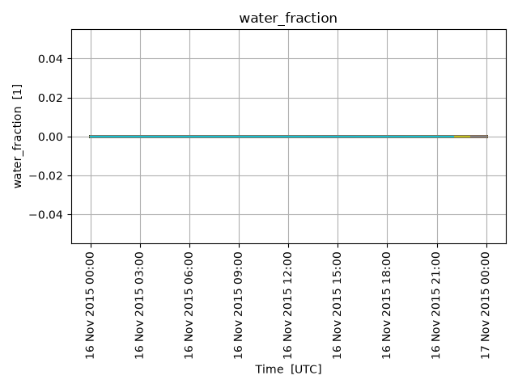
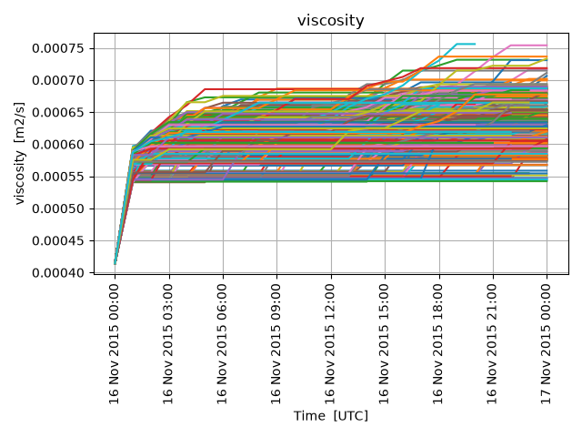
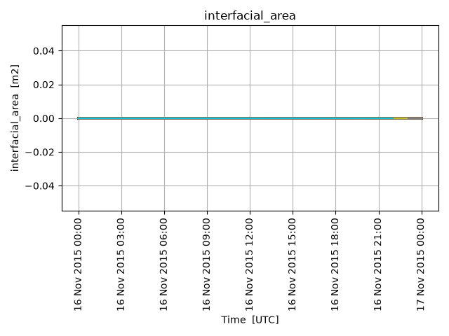
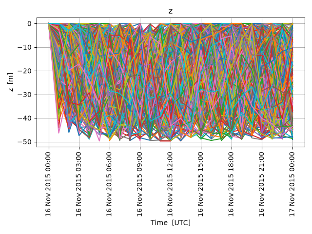

Note
Go to the end to download the full example code.
Oil budget (NOAA)
from datetime import datetime
from opendrift import test_data_folder as tdf
from opendrift.readers import reader_netCDF_CF_generic
from opendrift.models.openoil import OpenOil
o = OpenOil(loglevel=20, weathering_model='noaa')
# Using constand wind and current
#o.set_config('environment:fallback:x_wind', 7)
#o.set_config('environment:fallback:x_sea_water_velocity', .7)
#o.set_config('environment:fallback:y_sea_water_velocity', .3)
#o.set_config('environment:fallback:land_binary_mask', 0)
# Arome atmospheric model
reader_arome = reader_netCDF_CF_generic.Reader(tdf + '16Nov2015_NorKyst_z_surface/arome_subset_16Nov2015.nc')
# Norkyst ocean model
reader_norkyst = reader_netCDF_CF_generic.Reader(tdf + '16Nov2015_NorKyst_z_surface/norkyst800_subset_16Nov2015.nc')
o.add_reader([reader_arome, reader_norkyst])
13:22:57 INFO opendrift:579: OpenDriftSimulation initialised (version 1.14.11 / v1.14.12-91-g231396a)
13:22:57 INFO opendrift.readers:67: Opening file with xr.open_dataset
13:22:58 INFO opendrift.readers.reader_netCDF_CF_generic:340: Detected dimensions: {'time': 'time', 'x': 'x', 'y': 'y'}
13:22:58 INFO opendrift.readers:67: Opening file with xr.open_dataset
13:22:58 INFO opendrift.readers.reader_netCDF_CF_generic:340: Detected dimensions: {'x': 'X', 'y': 'Y', 'z': 'depth', 'time': 'time'}
Adjusting some configuration
o.set_config('processes:dispersion', False)
o.set_config('processes:evaporation', True)
o.set_config('processes:emulsification', True)
o.set_config('drift:vertical_mixing', True)
Seeding some oil particles
oil_type='MARTIN LINGE CRUDE 2016'
o.seed_elements(lon=4.88, lat=60.1, z=0, radius=3000, number=500,
time=reader_norkyst.start_time, oil_type=oil_type)
13:22:58 INFO opendrift.models.openoil.adios.dirjs:86: Querying ADIOS database for oil: MARTIN LINGE CRUDE 2016
13:22:58 INFO opendrift.models.openoil.openoil:1731: Using density 930.00252 and viscosity 0.0004141770017829454 of oiltype MARTIN LINGE CRUDE 2016
13:22:58 INFO opendrift.models.basemodel.environment:204: Adding a global landmask from GSHHG
13:23:03 INFO opendrift.models.basemodel.environment:238: Fallback values will be used for the following variables which have no readers:
13:23:03 INFO opendrift.models.basemodel.environment:241: sea_surface_height: 0.000000
13:23:03 INFO opendrift.models.basemodel.environment:241: upward_sea_water_velocity: 0.000000
13:23:03 INFO opendrift.models.basemodel.environment:241: sea_surface_wave_significant_height: 0.000000
13:23:03 INFO opendrift.models.basemodel.environment:241: sea_surface_wave_stokes_drift_x_velocity: 0.000000
13:23:03 INFO opendrift.models.basemodel.environment:241: sea_surface_wave_stokes_drift_y_velocity: 0.000000
13:23:03 INFO opendrift.models.basemodel.environment:241: sea_surface_wave_period_at_variance_spectral_density_maximum: 0.000000
13:23:03 INFO opendrift.models.basemodel.environment:241: sea_surface_wave_mean_period_from_variance_spectral_density_second_frequency_moment: 0.000000
13:23:03 INFO opendrift.models.basemodel.environment:241: sea_ice_area_fraction: 0.000000
13:23:03 INFO opendrift.models.basemodel.environment:241: sea_ice_x_velocity: 0.000000
13:23:03 INFO opendrift.models.basemodel.environment:241: sea_ice_y_velocity: 0.000000
13:23:03 INFO opendrift.models.basemodel.environment:241: sea_water_temperature: 10.000000
13:23:03 INFO opendrift.models.basemodel.environment:241: sea_water_salinity: 34.000000
13:23:03 INFO opendrift.models.basemodel.environment:241: sea_floor_depth_below_sea_level: 10000.000000
13:23:03 INFO opendrift.models.basemodel.environment:241: horizontal_diffusivity: 0.000000
13:23:03 INFO opendrift.models.basemodel.environment:241: ocean_vertical_diffusivity: 0.020000
13:23:03 INFO opendrift.models.basemodel.environment:241: ocean_mixed_layer_thickness: 50.000000
Running model
o.run(steps=4*24, time_step=900, time_step_output=3600)
13:23:03 INFO opendrift:1921: Skipping environment variable upward_sea_water_velocity because of condition ['drift:vertical_advection', 'is', False]
13:23:03 INFO opendrift:1932: Storing previous values of element property lon because of condition (('general:coastline_action', 'in', ['stranding', 'previous']), 'or', ('general:seafloor_action', 'in', ['previous']))
13:23:03 INFO opendrift:1932: Storing previous values of element property lat because of condition (('general:coastline_action', 'in', ['stranding', 'previous']), 'or', ('general:seafloor_action', 'in', ['previous']))
13:23:04 INFO opendrift:968: Using existing reader for land_binary_mask to move elements to ocean
13:23:04 INFO opendrift:1000: All points are in ocean
13:23:04 INFO opendrift.models.openoil.openoil:697: Oil-water surface tension is 0.033729 Nm
13:23:04 INFO opendrift.models.openoil.openoil:706: Using max water fractions [0.72, 0.78] for temperatures [5.0, 15.0] for oiltype MARTIN LINGE CRUDE 2016
13:23:04 INFO opendrift.models.openoil.openoil:707: Corresponding max water fraction from GNOME is 0.731347796266117
13:23:04 INFO opendrift:2248: 2015-11-16 00:00:00 - step 1 of 96 - 500 active elements (0 deactivated)
13:23:04 INFO opendrift:2248: 2015-11-16 00:15:00 - step 2 of 96 - 500 active elements (0 deactivated)
13:23:04 INFO opendrift:2248: 2015-11-16 00:30:00 - step 3 of 96 - 500 active elements (0 deactivated)
13:23:04 INFO opendrift:2248: 2015-11-16 00:45:00 - step 4 of 96 - 500 active elements (0 deactivated)
13:23:04 INFO opendrift:2248: 2015-11-16 01:00:00 - step 5 of 96 - 500 active elements (0 deactivated)
13:23:04 INFO opendrift:2248: 2015-11-16 01:15:00 - step 6 of 96 - 500 active elements (0 deactivated)
13:23:04 INFO opendrift:2248: 2015-11-16 01:30:00 - step 7 of 96 - 500 active elements (0 deactivated)
13:23:04 INFO opendrift:2248: 2015-11-16 01:45:00 - step 8 of 96 - 500 active elements (0 deactivated)
13:23:04 INFO opendrift:2248: 2015-11-16 02:00:00 - step 9 of 96 - 500 active elements (0 deactivated)
13:23:04 INFO opendrift:2248: 2015-11-16 02:15:00 - step 10 of 96 - 500 active elements (0 deactivated)
13:23:04 INFO opendrift:2248: 2015-11-16 02:30:00 - step 11 of 96 - 500 active elements (0 deactivated)
13:23:04 INFO opendrift:2248: 2015-11-16 02:45:00 - step 12 of 96 - 500 active elements (0 deactivated)
13:23:04 INFO opendrift:2248: 2015-11-16 03:00:00 - step 13 of 96 - 500 active elements (0 deactivated)
13:23:04 INFO opendrift:2248: 2015-11-16 03:15:00 - step 14 of 96 - 500 active elements (0 deactivated)
13:23:04 INFO opendrift:2248: 2015-11-16 03:30:00 - step 15 of 96 - 500 active elements (0 deactivated)
13:23:05 INFO opendrift:2248: 2015-11-16 03:45:00 - step 16 of 96 - 500 active elements (0 deactivated)
13:23:05 INFO opendrift:2248: 2015-11-16 04:00:00 - step 17 of 96 - 500 active elements (0 deactivated)
13:23:05 INFO opendrift:2248: 2015-11-16 04:15:00 - step 18 of 96 - 500 active elements (0 deactivated)
13:23:05 INFO opendrift:2248: 2015-11-16 04:30:00 - step 19 of 96 - 500 active elements (0 deactivated)
13:23:05 INFO opendrift:2248: 2015-11-16 04:45:00 - step 20 of 96 - 500 active elements (0 deactivated)
13:23:05 INFO opendrift:2248: 2015-11-16 05:00:00 - step 21 of 96 - 500 active elements (0 deactivated)
13:23:05 INFO opendrift:2248: 2015-11-16 05:15:00 - step 22 of 96 - 500 active elements (0 deactivated)
13:23:05 INFO opendrift:2248: 2015-11-16 05:30:00 - step 23 of 96 - 500 active elements (0 deactivated)
13:23:05 INFO opendrift:2248: 2015-11-16 05:45:00 - step 24 of 96 - 500 active elements (0 deactivated)
13:23:05 INFO opendrift:2248: 2015-11-16 06:00:00 - step 25 of 96 - 500 active elements (0 deactivated)
13:23:05 INFO opendrift:2248: 2015-11-16 06:15:00 - step 26 of 96 - 500 active elements (0 deactivated)
13:23:05 INFO opendrift:2248: 2015-11-16 06:30:00 - step 27 of 96 - 500 active elements (0 deactivated)
13:23:05 INFO opendrift:2248: 2015-11-16 06:45:00 - step 28 of 96 - 500 active elements (0 deactivated)
13:23:05 INFO opendrift:2248: 2015-11-16 07:00:00 - step 29 of 96 - 500 active elements (0 deactivated)
13:23:05 INFO opendrift:2248: 2015-11-16 07:15:00 - step 30 of 96 - 500 active elements (0 deactivated)
13:23:05 INFO opendrift:2248: 2015-11-16 07:30:00 - step 31 of 96 - 500 active elements (0 deactivated)
13:23:05 INFO opendrift:2248: 2015-11-16 07:45:00 - step 32 of 96 - 500 active elements (0 deactivated)
13:23:06 INFO opendrift:2248: 2015-11-16 08:00:00 - step 33 of 96 - 500 active elements (0 deactivated)
13:23:06 INFO opendrift:2248: 2015-11-16 08:15:00 - step 34 of 96 - 500 active elements (0 deactivated)
13:23:06 INFO opendrift:2248: 2015-11-16 08:30:00 - step 35 of 96 - 500 active elements (0 deactivated)
13:23:06 INFO opendrift:2248: 2015-11-16 08:45:00 - step 36 of 96 - 500 active elements (0 deactivated)
13:23:06 INFO opendrift:2248: 2015-11-16 09:00:00 - step 37 of 96 - 500 active elements (0 deactivated)
13:23:06 INFO opendrift:2248: 2015-11-16 09:15:00 - step 38 of 96 - 500 active elements (0 deactivated)
13:23:06 INFO opendrift:2248: 2015-11-16 09:30:00 - step 39 of 96 - 500 active elements (0 deactivated)
13:23:06 INFO opendrift:2248: 2015-11-16 09:45:00 - step 40 of 96 - 500 active elements (0 deactivated)
13:23:06 INFO opendrift:2248: 2015-11-16 10:00:00 - step 41 of 96 - 500 active elements (0 deactivated)
13:23:06 INFO opendrift:2248: 2015-11-16 10:15:00 - step 42 of 96 - 500 active elements (0 deactivated)
13:23:06 INFO opendrift:2248: 2015-11-16 10:30:00 - step 43 of 96 - 500 active elements (0 deactivated)
13:23:06 INFO opendrift:2248: 2015-11-16 10:45:00 - step 44 of 96 - 500 active elements (0 deactivated)
13:23:06 INFO opendrift:2248: 2015-11-16 11:00:00 - step 45 of 96 - 500 active elements (0 deactivated)
13:23:06 INFO opendrift:2248: 2015-11-16 11:15:00 - step 46 of 96 - 500 active elements (0 deactivated)
13:23:06 INFO opendrift:2248: 2015-11-16 11:30:00 - step 47 of 96 - 500 active elements (0 deactivated)
13:23:06 INFO opendrift:2248: 2015-11-16 11:45:00 - step 48 of 96 - 500 active elements (0 deactivated)
13:23:06 INFO opendrift:2248: 2015-11-16 12:00:00 - step 49 of 96 - 500 active elements (0 deactivated)
13:23:07 INFO opendrift:2248: 2015-11-16 12:15:00 - step 50 of 96 - 500 active elements (0 deactivated)
13:23:07 INFO opendrift:2248: 2015-11-16 12:30:00 - step 51 of 96 - 500 active elements (0 deactivated)
13:23:07 INFO opendrift:2248: 2015-11-16 12:45:00 - step 52 of 96 - 499 active elements (1 deactivated)
13:23:07 INFO opendrift:2248: 2015-11-16 13:00:00 - step 53 of 96 - 499 active elements (1 deactivated)
13:23:07 INFO opendrift:2248: 2015-11-16 13:15:00 - step 54 of 96 - 499 active elements (1 deactivated)
13:23:07 INFO opendrift:2248: 2015-11-16 13:30:00 - step 55 of 96 - 499 active elements (1 deactivated)
13:23:07 INFO opendrift:2248: 2015-11-16 13:45:00 - step 56 of 96 - 499 active elements (1 deactivated)
13:23:07 INFO opendrift:2248: 2015-11-16 14:00:00 - step 57 of 96 - 499 active elements (1 deactivated)
13:23:07 INFO opendrift:2248: 2015-11-16 14:15:00 - step 58 of 96 - 497 active elements (3 deactivated)
13:23:07 INFO opendrift:2248: 2015-11-16 14:30:00 - step 59 of 96 - 495 active elements (5 deactivated)
13:23:07 INFO opendrift:2248: 2015-11-16 14:45:00 - step 60 of 96 - 494 active elements (6 deactivated)
13:23:07 INFO opendrift:2248: 2015-11-16 15:00:00 - step 61 of 96 - 494 active elements (6 deactivated)
13:23:07 INFO opendrift:2248: 2015-11-16 15:15:00 - step 62 of 96 - 494 active elements (6 deactivated)
13:23:07 INFO opendrift:2248: 2015-11-16 15:30:00 - step 63 of 96 - 490 active elements (10 deactivated)
13:23:07 INFO opendrift:2248: 2015-11-16 15:45:00 - step 64 of 96 - 489 active elements (11 deactivated)
13:23:08 INFO opendrift:2248: 2015-11-16 16:00:00 - step 65 of 96 - 488 active elements (12 deactivated)
13:23:08 INFO opendrift:2248: 2015-11-16 16:15:00 - step 66 of 96 - 485 active elements (15 deactivated)
13:23:08 INFO opendrift:2248: 2015-11-16 16:30:00 - step 67 of 96 - 485 active elements (15 deactivated)
13:23:08 INFO opendrift:2248: 2015-11-16 16:45:00 - step 68 of 96 - 483 active elements (17 deactivated)
13:23:08 INFO opendrift:2248: 2015-11-16 17:00:00 - step 69 of 96 - 480 active elements (20 deactivated)
13:23:08 INFO opendrift:2248: 2015-11-16 17:15:00 - step 70 of 96 - 477 active elements (23 deactivated)
13:23:08 INFO opendrift:2248: 2015-11-16 17:30:00 - step 71 of 96 - 471 active elements (29 deactivated)
13:23:08 INFO opendrift:2248: 2015-11-16 17:45:00 - step 72 of 96 - 463 active elements (37 deactivated)
13:23:08 INFO opendrift:2248: 2015-11-16 18:00:00 - step 73 of 96 - 457 active elements (43 deactivated)
13:23:08 INFO opendrift:2248: 2015-11-16 18:15:00 - step 74 of 96 - 451 active elements (49 deactivated)
13:23:08 INFO opendrift:2248: 2015-11-16 18:30:00 - step 75 of 96 - 446 active elements (54 deactivated)
13:23:08 INFO opendrift:2248: 2015-11-16 18:45:00 - step 76 of 96 - 437 active elements (63 deactivated)
13:23:09 INFO opendrift:2248: 2015-11-16 19:00:00 - step 77 of 96 - 431 active elements (69 deactivated)
13:23:09 INFO opendrift:2248: 2015-11-16 19:15:00 - step 78 of 96 - 425 active elements (75 deactivated)
13:23:09 INFO opendrift:2248: 2015-11-16 19:30:00 - step 79 of 96 - 416 active elements (84 deactivated)
13:23:09 INFO opendrift:2248: 2015-11-16 19:45:00 - step 80 of 96 - 414 active elements (86 deactivated)
13:23:09 WARNING opendrift.readers.basereader.structured:324: Data block from /root/project/tests/test_data/16Nov2015_NorKyst_z_surface/arome_subset_16Nov2015.nc not large enough to cover element positions within timestep. Buffer size (4) must be increased. See `Variables.set_buffer_size`.
13:23:09 INFO opendrift:2248: 2015-11-16 20:00:00 - step 81 of 96 - 411 active elements (89 deactivated)
13:23:09 INFO opendrift:2248: 2015-11-16 20:15:00 - step 82 of 96 - 405 active elements (95 deactivated)
13:23:09 INFO opendrift:2248: 2015-11-16 20:30:00 - step 83 of 96 - 402 active elements (98 deactivated)
13:23:09 INFO opendrift:2248: 2015-11-16 20:45:00 - step 84 of 96 - 398 active elements (102 deactivated)
13:23:09 INFO opendrift:2248: 2015-11-16 21:00:00 - step 85 of 96 - 394 active elements (106 deactivated)
13:23:09 INFO opendrift:2248: 2015-11-16 21:15:00 - step 86 of 96 - 392 active elements (108 deactivated)
13:23:09 INFO opendrift:2248: 2015-11-16 21:30:00 - step 87 of 96 - 385 active elements (115 deactivated)
13:23:09 INFO opendrift:2248: 2015-11-16 21:45:00 - step 88 of 96 - 378 active elements (122 deactivated)
13:23:09 INFO opendrift:2248: 2015-11-16 22:00:00 - step 89 of 96 - 372 active elements (128 deactivated)
13:23:10 INFO opendrift:2248: 2015-11-16 22:15:00 - step 90 of 96 - 366 active elements (134 deactivated)
13:23:10 INFO opendrift:2248: 2015-11-16 22:30:00 - step 91 of 96 - 360 active elements (140 deactivated)
13:23:10 INFO opendrift:2248: 2015-11-16 22:45:00 - step 92 of 96 - 356 active elements (144 deactivated)
13:23:10 INFO opendrift:2248: 2015-11-16 23:00:00 - step 93 of 96 - 351 active elements (149 deactivated)
13:23:10 INFO opendrift:2248: 2015-11-16 23:15:00 - step 94 of 96 - 344 active elements (156 deactivated)
13:23:10 INFO opendrift:2248: 2015-11-16 23:30:00 - step 95 of 96 - 333 active elements (167 deactivated)
13:23:10 INFO opendrift:2248: 2015-11-16 23:45:00 - step 96 of 96 - 329 active elements (171 deactivated)
Print and plot results
o.plot_oil_budget()
o.plot(fast=True)
o.animation(fast=True)
#o.plot_oil_budget('oil_budget_MartinLingeCrude.png')


13:23:10 WARNING opendrift:2624: Plotting fast. This will make your plots less accurate.
13:23:11 WARNING opendrift:2624: Plotting fast. This will make your plots less accurate.
13:23:13 INFO opendrift:4899: Saving animation to /root/project/docs/source/gallery/animations/example_oil_budget_noaa_0.gif...
13:23:20 INFO opendrift:3307: Time to make animation: 0:00:08.543810

o.plot_property('fraction_evaporated')
o.plot_property('density')
o.plot_property('water_fraction')
o.plot_property('viscosity')
o.plot_property('interfacial_area')
o.plot_property('z')






Total running time of the script: (0 minutes 34.276 seconds)